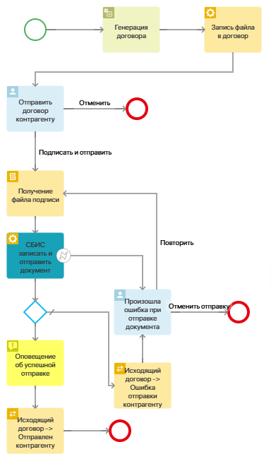
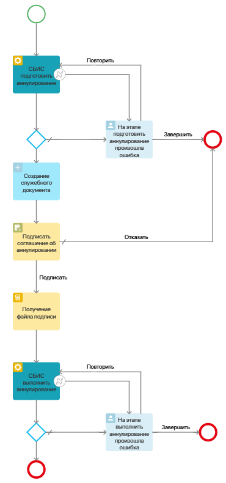
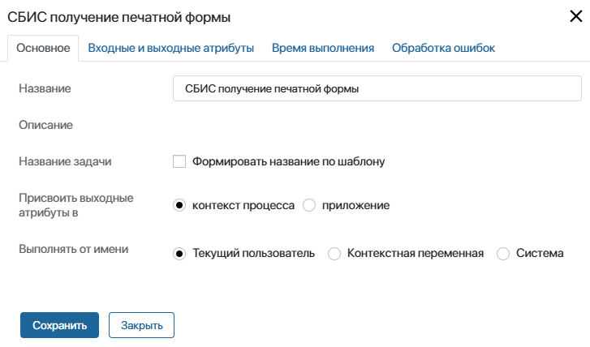
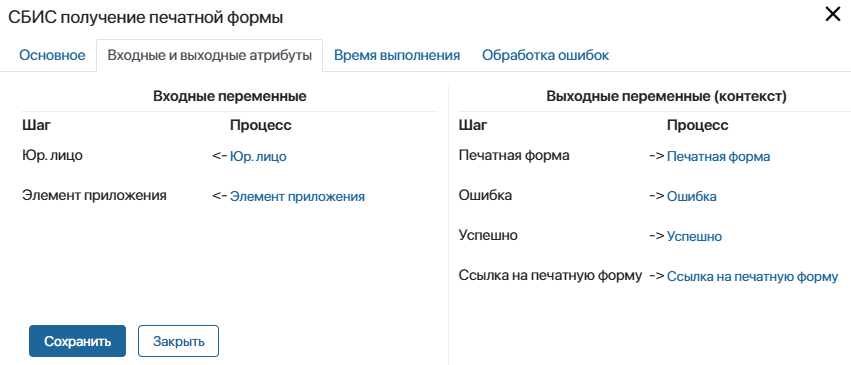
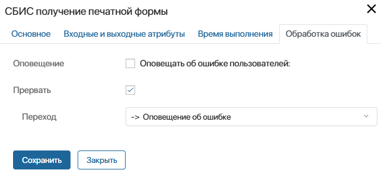

После установки решения и настройки модуля СБИС в дизайнер бизнес-процессов добавятся блоки, с помощью которых настройте взаимодействие ELMA365 с сервисом СБИС. Названия блоков соответствуют действиям, которые в них можно задать:
Название блока |
Назначение блока |
Блоки для создания и отправки документа в СБИС, подписания входящего документа |
|
СБИС записать документ |
Создать документ в СБИС без вложения. |
СБИС записать вложение |
Прикрепить вложение к документу, созданному в СБИС, а также файл подписи вложения. В текущей версии решения к одному документу можно прикрепить только одно вложение. Размещается на схеме процесса после блока СБИС записать документ. |
СБИС отправить документ |
Отправить контрагенту созданный в СБИС документ, к которому прикреплено вложение и файл подписи вложения. Размещается на схеме процесса после блоков СБИС записать документ и СБИС записать вложение. |
СБИС записать и отправить документ |
Объединяет действия указанных выше блоков. Позволяет создать документ в СБИС и прикрепить вложение к нему и файл подписи в, а затем отправить документ контрагенту. |
СБИС выполнить утверждение |
Прикрепить файл подписи вложения к входящему документу в СБИС, полученному от контрагента. Можно применить для входящего документа, который содержит не более одного вложения. |
Блоки для отправки и получения данных из СБИС |
|
СБИС импорт доверенности |
Загрузить в личный кабинет СБИС доверенность. Можно применить только для доверенности машиночитаемого типа. |
СБИС получение печатной формы |
Получить из СБИС файл с печатной формой документа, подписанного контрагентом. |
СБИС получить архив документооборота |
Получить из СБИС файл с архивом документооборота по запрашиваемому документу. |
Блоки для аннулирования документа в СБИС |
|
СБИС подготовить аннулирование |
Создать в СБИС соглашение об аннулировании документа, получить файл соглашения. |
СБИС выполнить аннулирование |
Прикрепить файл подписи к соглашению об аннулировании документа в СБИС и отправить контрагенту запрос на аннулирование. Размещается на схеме процесса после блока СБИС подготовить аннулирование. |
СБИС подготовить отказ от аннулирования |
Создать в СБИС служебный документ об отказе от аннулирования, получить его файл. |
СБИС выполнить отказ от аннулирования |
Прикрепить файл подписи к служебному документу об отказе от аннулирования в СБИС и отклонить запрошенное контрагентом аннулирование. Размещается на схеме процесса после блока СБИС подготовить отказ от аннулирования. |
СБИС подготовить подтверждение аннулирования |
Получить файл входящего соглашения об аннулировании документа, полученный от контрагента в СБИС. |
СБИС выполнить подтверждение аннулирования |
Прикрепить файл подписи к входящему соглашению об аннулировании документа в СБИС и тем самым подтвердить запрошенное контрагентом аннулирование. Размещается на схеме процесса после блока СБИС подготовить подтверждение аннулирования. |
С помощью блоков вы можете настроить процессы подписания входящего документа, отправки документа контрагенту, импортирования доверенности в СБИС, аннулирования документов. Если нужно, разместите кнопку запуска процесса на форме просмотра элемента сопоставленного документа.
Рассмотрим примеры использования блоков в настройках процесса. Обратите внимание, в СБИС подписывается только файл документа и не применяется подписание атрибутов документа.
Пример процесса для отправки договора контрагенту
 |
Пример процесса для отправки запроса на аннулирование документа в СБИС
 |
Настроить блок из решения «СБИС»
Блоки решения настраиваются одинаковым образом. В настройках блока сопоставьте:
- входные атрибуты — переменные с данными из ELMA365, которые передаются в СБИС;
- выходные атрибуты — переменные, в которые будет записан результат, полученный из СБИС.
Перед началом настройки блока создайте переменные для сопоставления с входными и выходными атрибутами:
- в контексте процесса — данные из СБИС можно отображать в процессных задачах;
- в контексте приложения — информацию из СБИС можно показывать в карточке элемента. Чтобы добавить в процесс переменные приложения, в контексте процесса создайте свойство типа Приложение, ссылающееся на него.
Переменные для настройки каждого блока описаны в статье «Входные и выходные атрибуты блоков решения „СБИС“».
Чтобы добавить блок на схему процесса, откройте её в дизайнере процессов и перетащите блок с боковой панели, открытой на вкладке Интеграции. Выполните настройку блока на трёх вкладках: Основное, Входные и выходные атрибуты, Обработка ошибок. Вкладку Время выполнения не нужно настраивать, т. к. ограничение времени выполнения блока может привести к ошибке.
Для примера рассмотрим настройку блока СБИС получение печатной формы.
Вкладка «Основное»
На вкладке Основное укажите общую информацию:

- Название — введите название блока, которое отобразится на схеме процесса;
- Описание — краткая информация о действиях, выполняемых в блоке, указывается при создании блока в модуле СБИС. Для блоков решения СБИС описание отсутствует;
- Название задачи — поскольку блоки решения СБИС выполняются автоматически, в них не нужно применять опцию Формировать название по шаблону;
- Присвоить выходные атрибуты в — укажите, в каком контексте созданы переменные, которые вы соотнесёте на вкладке Входные и Выходные атрибуты:
- контекст процесса — отметьте эту опцию, если переменные, в которых отобразится результат работы блока, созданы в контексте процесса;
- приложение — выберите опцию, а затем в поле Переменная* укажите название приложения, добавленного в контекст процесса, в поля которого запишется результат работы блока;
- Выполнять от имени —выберите пользователя, который будет указан инициатором выполнения блока в карточке экземпляра процесса:
- Текущий пользователь — пользователь, запустивший экземпляр процесса;
- Контекстная переменная — выберите переменную типа Пользователи (один) из контекста процесса. Действие выполнится от имени сотрудника, который указан в значении переменной. Например, вы можете выбрать контекстную переменную с пользователем, в чьей зоне ответственности размещён блок;
- Система — действие выполнится от имени пользователя, назначенного на роль Супервизор системы.
Вкладка «Входные и выходные атрибуты»
На этой вкладке поля настроек блока сопоставляются с контекстными переменными процесса или приложения. Во входные атрибуты передаётся информация из ELMA365, в выходные — записываются данные из сервиса СБИС, полученные в результате выполнения блока. Сопоставляемая переменная должна совпадать по типу с атрибутом блока.
Подробнее об атрибутах для настройки каждого блока читайте в статье «Входные и выходные атрибуты блоков решения „СБИС“».

Вкладка «Обработка ошибок»
На этой вкладке укажите, по какой ветке продолжится процесс при возникновении ошибки в работе блока. Также можно настроить оповещение пользователей об ошибке.

- Оповещение — включите опцию, а затем укажите пользователей, которые получат оповещение об ошибке в процессе. Выбрать можно пользователя, группу, элемент оргструктуры или контекстную переменную, например инициатора процесса;
- Прервать — включите опцию и затем в поле Переход укажите, по какой ветке продолжится процесс в случае возникновения ошибки. На схеме процесса такой переход будет отмечается значком .
После завершения настройки блока нажмите кнопку Сохранить.